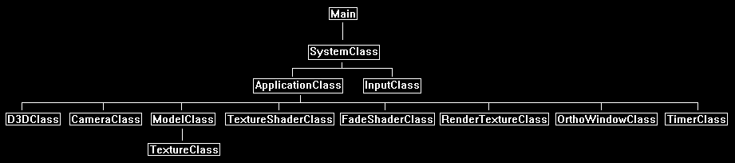
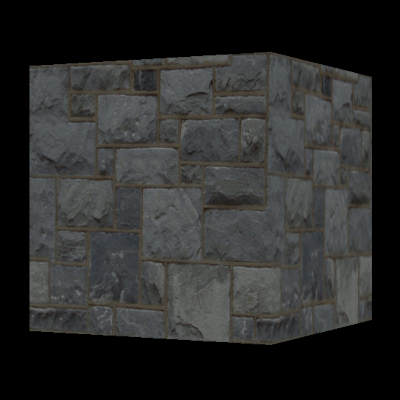

In this tutorial we will go over how to create the effect of fading in a scene.
The code in this tutorial is based on the previous tutorials and uses DirectX 11 with HLSL and C++.
To add a level of polish to our application one of the nice effects to do is to add quick fades when transitioning between scenes.
The traditional approach of instantly displaying a loading screen and then abruptly rendering the next scene leaves something to be desired.
One of the easiest ways to do a scene fade is to use render to texture and just increase or decrease the pixel color over a short period of time.
This can also be expanded to do different types of scene transitions such as rendering two scenes and sliding between them, or different types of dissolves.
In this tutorial I will just do a fade in using render to texture and a fade shader.
Framework
The framework has a new FadeShaderClass for handling the shading of the fade in.
We also use the OrthoWindowClass and RenderTextureClass.
The TimerClass is also used in this tutorial to time the fade in.

Fade.vs
The fade HLSL shaders are just modified versions of the texture shaders.
////////////////////////////////////////////////////////////////////////////////
// Filename: fade.vs
////////////////////////////////////////////////////////////////////////////////
/////////////
// GLOBALS //
/////////////
cbuffer MatrixBuffer
{
matrix worldMatrix;
matrix viewMatrix;
matrix projectionMatrix;
};
//////////////
// TYPEDEFS //
//////////////
struct VertexInputType
{
float4 position : POSITION;
float2 tex : TEXCOORD0;
};
struct PixelInputType
{
float4 position : SV_POSITION;
float2 tex : TEXCOORD0;
};
////////////////////////////////////////////////////////////////////////////////
// Vertex Shader
////////////////////////////////////////////////////////////////////////////////
PixelInputType FadeVertexShader(VertexInputType input)
{
PixelInputType output;
// Change the position vector to be 4 units for proper matrix calculations.
input.position.w = 1.0f;
// Calculate the position of the vertex against the world, view, and projection matrices.
output.position = mul(input.position, worldMatrix);
output.position = mul(output.position, viewMatrix);
output.position = mul(output.position, projectionMatrix);
// Store the texture coordinates for the pixel shader.
output.tex = input.tex;
return output;
}
Fade.ps
////////////////////////////////////////////////////////////////////////////////
// Filename: fade.ps
////////////////////////////////////////////////////////////////////////////////
//////////////////////
// CONSTANT BUFFERS //
//////////////////////
We add a new buffer called FadeBuffer to control the color level of the texture by using the fadeAmount variable.
This value will be incremented each frame to make the image brighter and brighter creating the fade in effect.
The value range is between 0.0 (0%) and 1.0 (100%).
The padding variable is just to ensure the buffer is a multiple of 16.
cbuffer FadeBuffer
{
float fadeAmount;
float3 padding;
};
/////////////
// GLOBALS //
/////////////
Texture2D shaderTexture : register(t0);
SamplerState SampleType : register(s0);
//////////////
// TYPEDEFS //
//////////////
struct PixelInputType
{
float4 position : SV_POSITION;
float2 tex : TEXCOORD0;
};
////////////////////////////////////////////////////////////////////////////////
// Pixel Shader
////////////////////////////////////////////////////////////////////////////////
float4 FadePixelShader(PixelInputType input) : SV_TARGET
{
float4 color;
// Sample the texture pixel at this location.
color = shaderTexture.Sample(SampleType, input.tex);
Here is where we use the fadeAmount to control the output color of all pixels from the texture to be set to a certain brightness.
// Reduce the color brightness to the current fade percentage.
color = color * fadeAmount;
return color;
}
Fadeshaderclass.h
The FadeShaderClass is just the TextureShaderClass modified to accommodate texture fading.
////////////////////////////////////////////////////////////////////////////////
// Filename: fadeshaderclass.h
////////////////////////////////////////////////////////////////////////////////
#ifndef _FADESHADERCLASS_H_
#define _FADESHADERCLASS_H_
//////////////
// INCLUDES //
//////////////
#include <d3d11.h>
#include <d3dcompiler.h>
#include <directxmath.h>
#include <fstream>
using namespace DirectX;
using namespace std;
////////////////////////////////////////////////////////////////////////////////
// Class name: FadeShaderClass
////////////////////////////////////////////////////////////////////////////////
class FadeShaderClass
{
private:
struct MatrixBufferType
{
XMMATRIX world;
XMMATRIX view;
XMMATRIX projection;
};
This is the new structure to match the fade constant buffer in the pixel shader.
struct FadeBufferType
{
float fadeAmount;
XMFLOAT3 padding;
};
public:
FadeShaderClass();
FadeShaderClass(const FadeShaderClass&);
~FadeShaderClass();
bool Initialize(ID3D11Device*, HWND);
void Shutdown();
bool Render(ID3D11DeviceContext*, int, XMMATRIX, XMMATRIX, XMMATRIX, ID3D11ShaderResourceView*, float);
private:
bool InitializeShader(ID3D11Device*, HWND, WCHAR*, WCHAR*);
void ShutdownShader();
void OutputShaderErrorMessage(ID3D10Blob*, HWND, WCHAR*);
bool SetShaderParameters(ID3D11DeviceContext*, XMMATRIX, XMMATRIX, XMMATRIX, ID3D11ShaderResourceView*, float);
void RenderShader(ID3D11DeviceContext*, int);
private:
ID3D11VertexShader* m_vertexShader;
ID3D11PixelShader* m_pixelShader;
ID3D11InputLayout* m_layout;
ID3D11Buffer* m_matrixBuffer;
ID3D11SamplerState* m_sampleState;
This is the new fade amount buffer that is used to control the brightness of all the pixels from the texture.
ID3D11Buffer* m_fadeBuffer;
};
#endif
Fadeshaderclass.cpp
////////////////////////////////////////////////////////////////////////////////
// Filename: fadeshaderclass.cpp
////////////////////////////////////////////////////////////////////////////////
#include "fadeshaderclass.h"
FadeShaderClass::FadeShaderClass()
{
m_vertexShader = 0;
m_pixelShader = 0;
m_layout = 0;
m_matrixBuffer = 0;
m_sampleState = 0;
Initialize the new buffer to null in the class constructor.
m_fadeBuffer = 0;
}
FadeShaderClass::FadeShaderClass(const FadeShaderClass& other)
{
}
FadeShaderClass::~FadeShaderClass()
{
}
bool FadeShaderClass::Initialize(ID3D11Device* device, HWND hwnd)
{
wchar_t vsFilename[128], psFilename[128];
int error;
bool result;
Load in the new fade.vs and fade.ps HLSL shader code.
// Set the filename of the vertex shader.
error = wcscpy_s(vsFilename, 128, L"../Engine/fade.vs");
if(error != 0)
{
return false;
}
// Set the filename of the pixel shader.
error = wcscpy_s(psFilename, 128, L"../Engine/fade.ps");
if(error != 0)
{
return false;
}
// Initialize the vertex and pixel shaders.
result = InitializeShader(device, hwnd, vsFilename, psFilename);
if(!result)
{
return false;
}
return true;
}
void FadeShaderClass::Shutdown()
{
// Shutdown the vertex and pixel shaders as well as the related objects.
ShutdownShader();
return;
}
The Render function now takes in a new float variable called fadeAmount.
This variable contains the current percentage of brightness the texture should be drawn at.
It will be set in the shader first before rendering the texture.
bool FadeShaderClass::Render(ID3D11DeviceContext* deviceContext, int indexCount, XMMATRIX worldMatrix, XMMATRIX viewMatrix, XMMATRIX projectionMatrix, ID3D11ShaderResourceView* texture, float fadeAmount)
{
bool result;
// Set the shader parameters that it will use for rendering.
result = SetShaderParameters(deviceContext, worldMatrix, viewMatrix, projectionMatrix, texture, fadeAmount);
if(!result)
{
return false;
}
// Now render the prepared buffers with the shader.
RenderShader(deviceContext, indexCount);
return true;
}
bool FadeShaderClass::InitializeShader(ID3D11Device* device, HWND hwnd, WCHAR* vsFilename, WCHAR* psFilename)
{
HRESULT result;
ID3D10Blob* errorMessage;
ID3D10Blob* vertexShaderBuffer;
ID3D10Blob* pixelShaderBuffer;
D3D11_INPUT_ELEMENT_DESC polygonLayout[2];
unsigned int numElements;
D3D11_BUFFER_DESC matrixBufferDesc;
D3D11_SAMPLER_DESC samplerDesc;
D3D11_BUFFER_DESC fadeBufferDesc;
// Initialize the pointers this function will use to null.
errorMessage = 0;
vertexShaderBuffer = 0;
pixelShaderBuffer = 0;
Load the new fade vertex shader.
// Compile the vertex shader code.
result = D3DCompileFromFile(vsFilename, NULL, NULL, "FadeVertexShader", "vs_5_0", D3D10_SHADER_ENABLE_STRICTNESS, 0, &vertexShaderBuffer, &errorMessage);
if(FAILED(result))
{
// If the shader failed to compile it should have writen something to the error message.
if(errorMessage)
{
OutputShaderErrorMessage(errorMessage, hwnd, vsFilename);
}
// If there was nothing in the error message then it simply could not find the shader file itself.
else
{
MessageBox(hwnd, vsFilename, L"Missing Shader File", MB_OK);
}
return false;
}
Load the new fade pixel shader.
// Compile the pixel shader code.
result = D3DCompileFromFile(psFilename, NULL, NULL, "FadePixelShader", "ps_5_0", D3D10_SHADER_ENABLE_STRICTNESS, 0, &pixelShaderBuffer, &errorMessage);
if(FAILED(result))
{
// If the shader failed to compile it should have writen something to the error message.
if(errorMessage)
{
OutputShaderErrorMessage(errorMessage, hwnd, psFilename);
}
// If there was nothing in the error message then it simply could not find the file itself.
else
{
MessageBox(hwnd, psFilename, L"Missing Shader File", MB_OK);
}
return false;
}
// Create the vertex shader from the buffer.
result = device->CreateVertexShader(vertexShaderBuffer->GetBufferPointer(), vertexShaderBuffer->GetBufferSize(), NULL, &m_vertexShader);
if(FAILED(result))
{
return false;
}
// Create the pixel shader from the buffer.
result = device->CreatePixelShader(pixelShaderBuffer->GetBufferPointer(), pixelShaderBuffer->GetBufferSize(), NULL, &m_pixelShader);
if(FAILED(result))
{
return false;
}
// Create the vertex input layout description.
polygonLayout[0].SemanticName = "POSITION";
polygonLayout[0].SemanticIndex = 0;
polygonLayout[0].Format = DXGI_FORMAT_R32G32B32_FLOAT;
polygonLayout[0].InputSlot = 0;
polygonLayout[0].AlignedByteOffset = 0;
polygonLayout[0].InputSlotClass = D3D11_INPUT_PER_VERTEX_DATA;
polygonLayout[0].InstanceDataStepRate = 0;
polygonLayout[1].SemanticName = "TEXCOORD";
polygonLayout[1].SemanticIndex = 0;
polygonLayout[1].Format = DXGI_FORMAT_R32G32_FLOAT;
polygonLayout[1].InputSlot = 0;
polygonLayout[1].AlignedByteOffset = D3D11_APPEND_ALIGNED_ELEMENT;
polygonLayout[1].InputSlotClass = D3D11_INPUT_PER_VERTEX_DATA;
polygonLayout[1].InstanceDataStepRate = 0;
// Get a count of the elements in the layout.
numElements = sizeof(polygonLayout) / sizeof(polygonLayout[0]);
// Create the vertex input layout.
result = device->CreateInputLayout(polygonLayout, numElements, vertexShaderBuffer->GetBufferPointer(), vertexShaderBuffer->GetBufferSize(), &m_layout);
if(FAILED(result))
{
return false;
}
// Release the vertex shader buffer and pixel shader buffer since they are no longer needed.
vertexShaderBuffer->Release();
vertexShaderBuffer = 0;
pixelShaderBuffer->Release();
pixelShaderBuffer = 0;
// Setup the description of the dynamic constant buffer that is in the vertex shader.
matrixBufferDesc.Usage = D3D11_USAGE_DYNAMIC;
matrixBufferDesc.ByteWidth = sizeof(MatrixBufferType);
matrixBufferDesc.BindFlags = D3D11_BIND_CONSTANT_BUFFER;
matrixBufferDesc.CPUAccessFlags = D3D11_CPU_ACCESS_WRITE;
matrixBufferDesc.MiscFlags = 0;
matrixBufferDesc.StructureByteStride = 0;
// Create the constant buffer pointer so we can access the vertex shader constant buffer from within this class.
result = device->CreateBuffer(&matrixBufferDesc, NULL, &m_matrixBuffer);
if(FAILED(result))
{
return false;
}
// Create a texture sampler state description.
samplerDesc.Filter = D3D11_FILTER_MIN_MAG_MIP_LINEAR;
samplerDesc.AddressU = D3D11_TEXTURE_ADDRESS_CLAMP;
samplerDesc.AddressV = D3D11_TEXTURE_ADDRESS_CLAMP;
samplerDesc.AddressW = D3D11_TEXTURE_ADDRESS_CLAMP;
samplerDesc.MipLODBias = 0.0f;
samplerDesc.MaxAnisotropy = 1;
samplerDesc.ComparisonFunc = D3D11_COMPARISON_ALWAYS;
samplerDesc.BorderColor[0] = 0;
samplerDesc.BorderColor[1] = 0;
samplerDesc.BorderColor[2] = 0;
samplerDesc.BorderColor[3] = 0;
samplerDesc.MinLOD = 0;
samplerDesc.MaxLOD = D3D11_FLOAT32_MAX;
// Create the texture sampler state.
result = device->CreateSamplerState(&samplerDesc, &m_sampleState);
if(FAILED(result))
{
return false;
}
Setup a buffer that will hold the fadeAmount variable so we can interface with the pixel shader fade buffer.
// Setup the description of the dynamic pixel constant buffer that is in the pixel shader.
fadeBufferDesc.Usage = D3D11_USAGE_DYNAMIC;
fadeBufferDesc.ByteWidth = sizeof(FadeBufferType);
fadeBufferDesc.BindFlags = D3D11_BIND_CONSTANT_BUFFER;
fadeBufferDesc.CPUAccessFlags = D3D11_CPU_ACCESS_WRITE;
fadeBufferDesc.MiscFlags = 0;
fadeBufferDesc.StructureByteStride = 0;
// Create the pixel constant buffer pointer so we can access the pixel shader constant buffer from within this class.
result = device->CreateBuffer(&fadeBufferDesc, NULL, &m_fadeBuffer);
if(FAILED(result))
{
return false;
}
return true;
}
void FadeShaderClass::ShutdownShader()
{
Release the new fade buffer in the ShutdownShader function.
// Release the fade constant buffer.
if(m_fadeBuffer)
{
m_fadeBuffer->Release();
m_fadeBuffer = 0;
}
// Release the sampler state.
if(m_sampleState)
{
m_sampleState->Release();
m_sampleState = 0;
}
// Release the matrix constant buffer.
if(m_matrixBuffer)
{
m_matrixBuffer->Release();
m_matrixBuffer = 0;
}
// Release the layout.
if(m_layout)
{
m_layout->Release();
m_layout = 0;
}
// Release the pixel shader.
if(m_pixelShader)
{
m_pixelShader->Release();
m_pixelShader = 0;
}
// Release the vertex shader.
if(m_vertexShader)
{
m_vertexShader->Release();
m_vertexShader = 0;
}
return;
}
void FadeShaderClass::OutputShaderErrorMessage(ID3D10Blob* errorMessage, HWND hwnd, WCHAR* shaderFilename)
{
char* compileErrors;
unsigned __int64 bufferSize, i;
ofstream fout;
// Get a pointer to the error message text buffer.
compileErrors = (char*)(errorMessage->GetBufferPointer());
// Get the length of the message.
bufferSize = errorMessage->GetBufferSize();
// Open a file to write the error message to.
fout.open("shader-error.txt");
// Write out the error message.
for(i=0; i<bufferSize; i++)
{
fout << compileErrors[i];
}
// Close the file.
fout.close();
// Release the error message.
errorMessage->Release();
errorMessage = 0;
// Pop a message up on the screen to notify the user to check the text file for compile errors.
MessageBox(hwnd, L"Error compiling shader. Check shader-error.txt for message.", shaderFilename, MB_OK);
return;
}
bool FadeShaderClass::SetShaderParameters(ID3D11DeviceContext* deviceContext, XMMATRIX worldMatrix, XMMATRIX viewMatrix, XMMATRIX projectionMatrix, ID3D11ShaderResourceView* texture, float fadeAmount)
{
HRESULT result;
D3D11_MAPPED_SUBRESOURCE mappedResource;
MatrixBufferType* dataPtr;
unsigned int bufferNumber;
FadeBufferType* dataPtr2;
// Transpose the matrices to prepare them for the shader.
worldMatrix = XMMatrixTranspose(worldMatrix);
viewMatrix = XMMatrixTranspose(viewMatrix);
projectionMatrix = XMMatrixTranspose(projectionMatrix);
// Lock the martix constant buffer so it can be written to.
result = deviceContext->Map(m_matrixBuffer, 0, D3D11_MAP_WRITE_DISCARD, 0, &mappedResource);
if(FAILED(result))
{
return false;
}
// Get a pointer to the data in the matrix constant buffer.
dataPtr = (MatrixBufferType*)mappedResource.pData;
// Copy the matrices into the matrix constant buffer.
dataPtr->world = worldMatrix;
dataPtr->view = viewMatrix;
dataPtr->projection = projectionMatrix;
// Unlock the matrix constant buffer.
deviceContext->Unmap(m_matrixBuffer, 0);
// Set the position of the constant buffer in the vertex shader.
bufferNumber = 0;
// Now set the matrix constant buffer in the vertex shader with the updated values.
deviceContext->VSSetConstantBuffers(bufferNumber, 1, &m_matrixBuffer);
// Set shader texture resource in the pixel shader.
deviceContext->PSSetShaderResources(0, 1, &texture);
This is where we set the fadeAmount value inside the pixel shader.
We first lock the fade buffer and then copy the updated fadeAmount value into it.
After that we unlock the fade buffer and then set it in the pixel shader using the PSSetConstantBuffers function.
// Lock the pixel constant buffer so it can be written to.
result = deviceContext->Map(m_fadeBuffer, 0, D3D11_MAP_WRITE_DISCARD, 0, &mappedResource);
if(FAILED(result))
{
return false;
}
// Get a pointer to the data in the pixel constant buffer.
dataPtr2 = (FadeBufferType*)mappedResource.pData;
// Copy the data into the pixel constant buffer.
dataPtr2->fadeAmount = fadeAmount;
dataPtr2->padding = XMFLOAT3(0.0f, 0.0f, 0.0f);
// Unlock the pixel constant buffer.
deviceContext->Unmap(m_fadeBuffer, 0);
// Set the position of the pixel constant buffer in the pixel shader.
bufferNumber = 0;
// Now set the pixel constant buffer in the pixel shader with the updated value.
deviceContext->PSSetConstantBuffers(bufferNumber, 1, &m_fadeBuffer);
return true;
}
void FadeShaderClass::RenderShader(ID3D11DeviceContext* deviceContext, int indexCount)
{
// Set the vertex input layout.
deviceContext->IASetInputLayout(m_layout);
// Set the vertex and pixel shaders that will be used to render the triangles.
deviceContext->VSSetShader(m_vertexShader, NULL, 0);
deviceContext->PSSetShader(m_pixelShader, NULL, 0);
// Set the sampler state in the pixel shader.
deviceContext->PSSetSamplers(0, 1, &m_sampleState);
// Render the triangles.
deviceContext->DrawIndexed(indexCount, 0, 0);
return;
}
Applicationclass.h
The tutorial will be similar to the previous blur tutorial in that we render the scene of a spinning cube to a texture, and then we perform the post processing fade to the render texture and display that to the screen.
So, we will need most of the same headers for this tutorial such as RenderTextureClass and OrthoWindowClass.
However, we will also need the new FadeShaderClass and the TimerClass for instead performing a fade over time for this tutorial.
////////////////////////////////////////////////////////////////////////////////
// Filename: applicationclass.h
////////////////////////////////////////////////////////////////////////////////
#ifndef _APPLICATIONCLASS_H_
#define _APPLICATIONCLASS_H_
///////////////////////
// MY CLASS INCLUDES //
///////////////////////
#include "d3dclass.h"
#include "inputclass.h"
#include "cameraclass.h"
#include "modelclass.h"
#include "textureshaderclass.h"
#include "rendertextureclass.h"
#include "orthowindowclass.h"
#include "fadeshaderclass.h"
#include "timerclass.h"
/////////////
// GLOBALS //
/////////////
const bool FULL_SCREEN = false;
const bool VSYNC_ENABLED = true;
const float SCREEN_DEPTH = 1000.0f;
const float SCREEN_NEAR = 0.3f;
////////////////////////////////////////////////////////////////////////////////
// Class name: ApplicationClass
////////////////////////////////////////////////////////////////////////////////
class ApplicationClass
{
public:
ApplicationClass();
ApplicationClass(const ApplicationClass&);
~ApplicationClass();
bool Initialize(int, int, HWND);
void Shutdown();
bool Frame(InputClass*);
private:
bool RenderSceneToTexture(float);
bool Render(float);
private:
D3DClass* m_Direct3D;
CameraClass* m_Camera;
TextureShaderClass* m_TextureShader;
ModelClass* m_Model;
RenderTextureClass* m_RenderTexture;
OrthoWindowClass* m_FullScreenWindow;
FadeShaderClass* m_FadeShader;
TimerClass* m_Timer;
We have new variables to maintain information about the fade in effect.
float m_accumulatedTime, m_fadeInTime;
};
#endif
Applicationclass.cpp
////////////////////////////////////////////////////////////////////////////////
// Filename: applicationclass.cpp
////////////////////////////////////////////////////////////////////////////////
#include "applicationclass.h"
ApplicationClass::ApplicationClass()
{
m_Direct3D = 0;
m_Camera = 0;
m_TextureShader = 0;
m_Model = 0;
m_RenderTexture = 0;
m_FullScreenWindow = 0;
m_FadeShader = 0;
m_Timer = 0;
}
ApplicationClass::ApplicationClass(const ApplicationClass& other)
{
}
ApplicationClass::~ApplicationClass()
{
}
bool ApplicationClass::Initialize(int screenWidth, int screenHeight, HWND hwnd)
{
char modelFilename[128], textureFilename[128];
bool result;
First setup all the objects we will need to render to the scene to a texture and display that texture to the full screen.
// Create and initialize the Direct3D object.
m_Direct3D = new D3DClass;
result = m_Direct3D->Initialize(screenWidth, screenHeight, VSYNC_ENABLED, hwnd, FULL_SCREEN, SCREEN_DEPTH, SCREEN_NEAR);
if(!result)
{
MessageBox(hwnd, L"Could not initialize Direct3D.", L"Error", MB_OK);
return false;
}
// Create and initialize the camera object.
m_Camera = new CameraClass;
m_Camera->SetPosition(0.0f, 0.0f, -10.0f);
m_Camera->Render();
// Create and initialize the model object.
m_Model = new ModelClass;
strcpy_s(modelFilename, "../Engine/data/cube.txt");
strcpy_s(textureFilename, "../Engine/data/stone01.tga");
result = m_Model->Initialize(m_Direct3D->GetDevice(), m_Direct3D->GetDeviceContext(), modelFilename, textureFilename);
if(!result)
{
MessageBox(hwnd, L"Could not initialize the model object.", L"Error", MB_OK);
return false;
}
// Create and initialize the texture shader object.
m_TextureShader = new TextureShaderClass;
result = m_TextureShader->Initialize(m_Direct3D->GetDevice(), hwnd);
if(!result)
{
MessageBox(hwnd, L"Could not initialize the texture shader object.", L"Error", MB_OK);
return false;
}
// Create and initialize the render to texture object.
m_RenderTexture = new RenderTextureClass;
result = m_RenderTexture->Initialize(m_Direct3D->GetDevice(), screenWidth, screenHeight, SCREEN_NEAR, SCREEN_DEPTH, 0);
if(!result)
{
MessageBox(hwnd, L"Could not initialize the render texture object.", L"Error", MB_OK);
return false;
}
// Create and initialize the full screen ortho window object.
m_FullScreenWindow = new OrthoWindowClass;
result = m_FullScreenWindow->Initialize(m_Direct3D->GetDevice(), screenWidth, screenHeight);
if(!result)
{
MessageBox(hwnd, L"Could not initialize the full screen ortho window object.", L"Error", MB_OK);
return false;
}
Create and initialize the fade shader class object here.
// Create and initialize the fade shader object.
m_FadeShader = new FadeShaderClass;
result = m_FadeShader->Initialize(m_Direct3D->GetDevice(), hwnd);
if(!result)
{
MessageBox(hwnd, L"Could not initialize the fade shader object.", L"Error", MB_OK);
return false;
}
We will also need a timer object for timing the fade speed.
// Create and initialize the timer object.
m_Timer = new TimerClass;
result = m_Timer->Initialize();
if (!result)
{
MessageBox(hwnd, L"Could not initialize the timer object.", L"Error", MB_OK);
return false;
}
Setup the fade in variables here.
// Initialize the accumulated time to zero.
m_accumulatedTime = 0.0f;
// Set the fade in time to 5 seconds.
m_fadeInTime = 5.0f;
return true;
}
void ApplicationClass::Shutdown()
{
// Release the timer object.
if(m_Timer)
{
delete m_Timer;
m_Timer = 0;
}
// Release the blur shader object.
if(m_FadeShader)
{
m_FadeShader->Shutdown();
delete m_FadeShader;
m_FadeShader = 0;
}
// Release the full screen ortho window object.
if(m_FullScreenWindow)
{
m_FullScreenWindow->Shutdown();
delete m_FullScreenWindow;
m_FullScreenWindow = 0;
}
// Release the render texture object.
if(m_RenderTexture)
{
m_RenderTexture->Shutdown();
delete m_RenderTexture;
m_RenderTexture = 0;
}
// Release the texture shader object.
if(m_TextureShader)
{
m_TextureShader->Shutdown();
delete m_TextureShader;
m_TextureShader = 0;
}
// Release the model object.
if(m_Model)
{
m_Model->Shutdown();
delete m_Model;
m_Model = 0;
}
// Release the camera object.
if(m_Camera)
{
delete m_Camera;
m_Camera = 0;
}
// Release the Direct3D object.
if(m_Direct3D)
{
m_Direct3D->Shutdown();
delete m_Direct3D;
m_Direct3D = 0;
}
return;
}
bool ApplicationClass::Frame(InputClass* Input)
{
static float rotation = 0.0f;
float frameTime;
float fadePercentage;
bool result;
Update the timer each frame.
// Update the system stats.
m_Timer->Frame();
// Check if the user pressed escape and wants to exit the application.
if(Input->IsEscapePressed())
{
return false;
}
// Update the rotation variable each frame.
rotation -= 0.0174532925f * 0.25f;
if(rotation < 0.0f)
{
rotation += 360.0f;
}
Update the fade in percentage each frame.
// Update the accumulated time with the extra frame time addition.
frameTime = m_Timer->GetTime();
m_accumulatedTime += frameTime;
// While the time goes on increase the fade in amount by the time that is passing each frame.
if(m_accumulatedTime < m_fadeInTime)
{
// Calculate the percentage that the screen should be faded in based on the accumulated time.
fadePercentage = m_accumulatedTime / m_fadeInTime;
}
else
{
fadePercentage = 1.0f;
}
Render the regular spinning cube scene to a render texture.
// Render the scene to a render texture.
result = RenderSceneToTexture(rotation);
if(!result)
{
return false;
}
Perform the fade and present the final fading scene to the screen.
// Render the faded version of the scene.
result = Render(fadePercentage);
if(!result)
{
return false;
}
return true;
}
Render the spinning cube to a render texture just like the previous tutorial.
bool ApplicationClass::RenderSceneToTexture(float rotation)
{
XMMATRIX worldMatrix, viewMatrix, projectionMatrix;
bool result;
// Set the render target to be the render texture and clear it.
m_RenderTexture->SetRenderTarget(m_Direct3D->GetDeviceContext());
m_RenderTexture->ClearRenderTarget(m_Direct3D->GetDeviceContext(), 0.0f, 0.0f, 0.0f, 1.0f);
// Get the matrices.
m_Direct3D->GetWorldMatrix(worldMatrix);
m_Camera->GetViewMatrix(viewMatrix);
m_RenderTexture->GetProjectionMatrix(projectionMatrix);
// Rotate the world matrix by the rotation value so that the triangle will spin.
worldMatrix = XMMatrixRotationY(rotation);
// Put the model vertex and index buffers on the graphics pipeline to prepare them for drawing.
m_Model->Render(m_Direct3D->GetDeviceContext());
result = m_TextureShader->Render(m_Direct3D->GetDeviceContext(), m_Model->GetIndexCount(), worldMatrix, viewMatrix, projectionMatrix, m_Model->GetTexture());
if(!result)
{
return false;
}
// Reset the render target back to the original back buffer and not the render to texture anymore. And reset the viewport back to the original.
m_Direct3D->SetBackBufferRenderTarget();
m_Direct3D->ResetViewport();
return true;
}
The Render function uses the render to texture of the 3D rotating cube scene and draws it as a 2D ortho window to the screen using the FadeShaderClass object.
The FadeShaderClass object takes in the fadeAmount value to determine what percentage of brightness the texture should be at this frame which creates the fade in effect.
bool ApplicationClass::Render(float fadePercentage)
{
XMMATRIX worldMatrix, viewMatrix, orthoMatrix;
bool result;
// Clear the buffers to begin the scene.
m_Direct3D->BeginScene(0.0f, 0.0f, 0.0f, 1.0f);
// Get the world, view, and projection matrices from the camera and d3d objects.
m_Direct3D->GetWorldMatrix(worldMatrix);
m_Camera->GetViewMatrix(viewMatrix);
m_Direct3D->GetOrthoMatrix(orthoMatrix);
// Render the full screen ortho window.
m_FullScreenWindow->Render(m_Direct3D->GetDeviceContext());
// Render the full screen ortho window using the texture shader and the full screen sized blurred render to texture resource.
result = m_FadeShader->Render(m_Direct3D->GetDeviceContext(), m_Model->GetIndexCount(), worldMatrix, viewMatrix, orthoMatrix, m_RenderTexture->GetShaderResourceView(), fadePercentage);
if(!result)
{
return false;
}
// Present the rendered scene to the screen.
m_Direct3D->EndScene();
return true;
}
Summary
Using render to texture and a fade shader we can now fade in and fade out our 3D scenes.
This effect can be extended to render the new and old scene at the same time to create more interesting transition effects.

To Do Exercises
1. Recompile and run the program. The cube should slowly fade in over a 5 second period. Press escape to quit.
2. Change the speed at which the scene fades in.
3. Change the code to fade the scene out after fading it in.
4. Create a second scene and do either a fade or a dissolve between the two.
Source Code
Source Code and Data Files: dx11win10tut37_src.zip